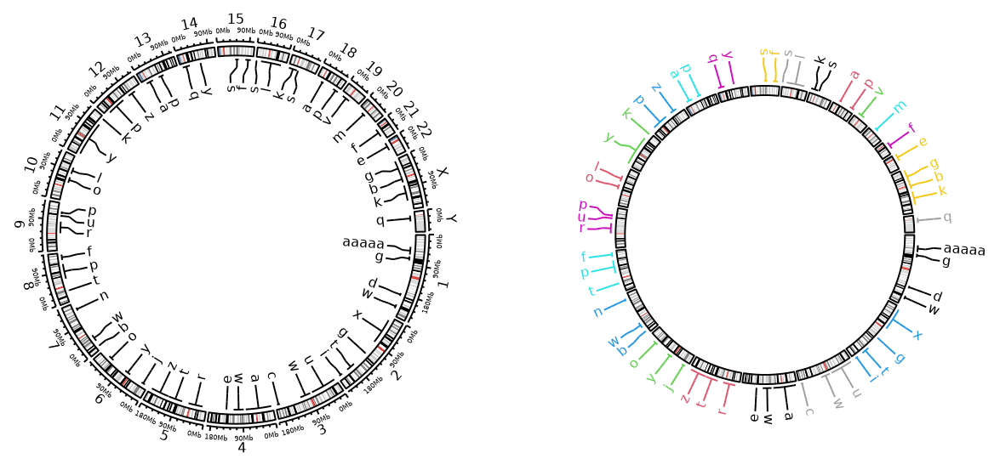

12 High-level genomic functions#
This chapter introduces high-level genomic plotting functions in circlize-py that create complete tracks (or paired connector-and-data tracks) in a single call.
12.1 Ideograms#
circos.initializeWithIdeogram() initializes the circular
layout and adds the ideogram track whenever cytoband data is available.
Internally, the chromosome bands are drawn by
circos.genomicIdeogram(), which you can call directly to
place an ideogram track at any radial position (Figure 12.1):
from circlize_py import circos
circos.initializeWithIdeogram(plot_type=("labels", "axis"))
circos.track(ylim=(0.0, 1.0))
circos.genomicIdeogram() # place ideogram as the third track
circos.genomicIdeogram(track_height=0.2)
circos.clear()
12.2 Heatmaps#
Matrices associated with genomic intervals can be visualized with
circos.genomicHeatmap(). It creates two paired tracks—one
for connection lines linking each genomic region to its tile, and one
for the heatmap itself.
By default, all numeric columns after the first three BED columns are
used, or you can select columns with numeric_column (column
names or indices). Colors can be provided as a colorRamp2()
mapping function or as a precomputed color matrix matching the shape of
the selected value columns. You can customize the connection track and
heatmap dimensions using connection_height,
heatmap_height, border, and
line_col (Figure 12.2):
import matplotlib.pyplot as plt
import pandas as pd
from circlize_py import circos, colorRamp2, generateRandomBed
bed = generateRandomBed(nr=100, nc=4, seed=401)
col_fun = colorRamp2([-1.0, 0.0, 1.0], ["green", "black", "red"])
fig = plt.figure(figsize=(10.5, 5.2))
ax1 = fig.add_subplot(1, 2, 1)
circos.initializeWithIdeogram(ax=ax1)
circos.genomicHeatmap(bed, col=col_fun, side="inside", border="white")
circos.clear()
ax2 = fig.add_subplot(1, 2, 2)
circos.initializeWithIdeogram(plot_type=None, ax=ax2)
line_cols = (pd.Categorical(bed.iloc[:, 0]).codes + 1).tolist()
circos.genomicHeatmap(bed, col=col_fun, side="outside", line_col=line_cols)
circos.genomicIdeogram()
circos.clear()
12.3 Labels#
circos.genomicLabels() places radial text labels for
genomic regions and automatically spreads colliding labels across
sectors while drawing elbow connector lines back to the original genomic
loci.
Like circos.genomicHeatmap(),
circos.genomicLabels() creates two tracks: one for the
connector lines and one for the labels. You can tune the label track
height (labels_height), label spacing
(padding), and whether labels appear inside
(side="inside") or outside (side="outside")
the ideogram (Figure 12.3):
import string
import numpy as np
rng = np.random.default_rng(402)
bed = generateRandomBed(
nr=50,
fun=lambda k: rng.choice(list(string.ascii_lowercase), size=k, replace=True),
seed=402,
)
bed.iloc[0, 3] = "aaaaa"
fig = plt.figure(figsize=(10.5, 5.2))
ax1 = fig.add_subplot(1, 2, 1)
circos.initializeWithIdeogram(ax=ax1)
circos.genomicLabels(bed, labels_column=3, side="inside")
circos.clear()
ax2 = fig.add_subplot(1, 2, 2)
circos.initializeWithIdeogram(plot_type=None, ax=ax2)
grp_cols = (pd.Categorical(bed.iloc[:, 0]).codes + 1).tolist()
circos.genomicLabels(
bed, labels_column=3, side="outside", col=grp_cols, line_col=grp_cols
)
circos.genomicIdeogram()
circos.clear()
12.4 Position transformation lines#
Under the hood, circos.genomicLabels() uses
circos.genomicPosTransformLines() together with position
transformation functions such as posTransform.text() and
posTransform.default(). You can also use these helpers
directly to build custom non-overlapping annotation tracks (Figure
12.4):
posTransform.default()distributes intervals uniformly across the entire sector x-range.posTransform.text()measures each label’s rendered size and shifts only overlapping neighbors, keeping non-overlapping regions close to their original genomic coordinates.paddingcontrols extra spacing between adjacent labels, anddirection("outside"or"inside") controls which way the connector lines point.
from circlize_py import get, posTransform
bed = generateRandomBed(nr=400, fun=lambda k: np.repeat("text", k), seed=123458)
bed = bed.drop(bed.index[8:13]).reset_index(drop=True)
circos.par(
start_degree=90,
canvas_xlim=(0.0, 1.0),
canvas_ylim=(0.0, 1.0),
gap_degree=270,
cell_padding=(0.0, 0.0, 0.0, 0.0),
track_margin=(0.005, 0.005),
)
circos.initializeWithIdeogram(plot_type=("axis",), chromosome_index="chr1")
circos.genomicTrackPlotRegion(
bed,
ylim=(0.0, 1.0),
panel_fun=lambda region, value, **kw: circos.genomicText(
region,
value,
y=0.0,
labels_column=0,
facing="clockwise",
adj=(0.0, 0.5),
posTransform=posTransform.text,
cex=0.8,
niceFacing=False,
),
track_height=0.1,
bg_border=None,
)
i_track = get.cell.meta.data("track.index")
circos.genomicPosTransformLines(
bed,
posTransform=lambda region, value: posTransform.text(
region, y=0.0, labels=value.iloc[:, 0], cex=0.8, track_index=i_track
),
direction="outside",
)
circos.genomicTrackPlotRegion(
bed,
ylim=(0.0, 1.0),
panel_fun=lambda region, value, **kw: circos.points(
0.5 * (region.iloc[:, 0] + region.iloc[:, 1]),
np.full(len(region), 0.5),
pch=16,
),
track_height=0.02,
bg_border=None,
)
circos.clear()
12.5 Genomic axes#
Although genomic axes are a lower-level helper, they integrate
directly with high-level genomic tracks.
circos.initializeWithIdeogram() formats tick labels in
bp, kb, or Mb via
circos.genomicAxis(), which you can call inside any track’s
panel_fun (Figure 12.5):
circos.initializeWithIdeogram(plot_type=None)
circos.genomicIdeogram()
# Add top genomic axis to the ideogram track
circos.track(
track_index=get.current.track.index(),
panel_fun=lambda x, y: circos.genomicAxis(h="top"),
)
circos.track(ylim=(0.0, 1.0), track_height=0.1)
circos.track(
track_index=get.current.track.index(),
panel_fun=lambda x, y: circos.genomicAxis(h="bottom", direction="inside"),
)
circos.clear()
12.6 Genomic density and Rainfall plot#
Rainfall plots visualize the spatial clustering of genomic features across a genome. Each dot represents a genomic region, with x at the region midpoint and y equal to the $_{10}$ minimum distance to its neighboring regions. Dense clusters drop downward into visible “rainfall” streaks.
circos.genomicRainfall() computes neighbor distances and
creates a rainfall track from either a single DataFrame or
a list[DataFrame]:
circos.genomicRainfall(bed)
circos.genomicRainfall(bed_list, col=["red", "green"])When regions are very dense, individual dots overlap and obscure the
exact coverage rate. circos.genomicDensity() complements
rainfall plots by computing the fraction of each sliding genomic window
covered by intervals in bed (or a list of bed
tables):
circos.genomicDensity(bed)
circos.genomicDensity(bed, baseline=0.0)
circos.genomicDensity(bed, window_size=1e6)
circos.genomicDensity(bed_list, col=["#FF000080", "#0000FF80"])The example below uses the bundled "DMR" dataset of
hyper-methylated and hypo-methylated differentially methylated regions
(DMRs) to combine a rainfall track with two genomic density tracks
(Figure 12.6):
from circlize_py import load_extdata
dmr = load_extdata("DMR")
DMR_hyper = dmr["DMR_hyper"]
DMR_hypo = dmr["DMR_hypo"]
circos.initializeWithIdeogram(chromosome_index=[f"chr{i}" for i in range(1, 23)])
circos.genomicRainfall(
[DMR_hyper, DMR_hypo],
pch=16,
cex=0.4,
col=["#FF000080", "#0000FF80"],
)
circos.genomicDensity(DMR_hyper, col="#FF000080", track_height=0.1)
circos.genomicDensity(DMR_hypo, col="#0000FF80", track_height=0.1)
circos.clear()
circos.genomicDensity() can also count the raw
number of regions overlapping each window instead of
coverage fraction by setting count_by="number" (Figure
12.7):
circos.initializeWithIdeogram(chromosome_index=[f"chr{i}" for i in range(1, 23)])
circos.genomicDensity(DMR_hyper, col="#FF000080", track_height=0.1)
circos.genomicDensity(DMR_hyper, col="#FF000080", count_by="number", track_height=0.1)
circos.clear()
Internally, rainfallTransform() and
genomicDensity() compute the underlying interval distances
and sliding-window densities and can also be called directly for
downstream tabular analysis:
from circlize_py import genomicDensity, rainfallTransform
print(rainfallTransform(DMR_hyper).head()) chr start end dist
0 chr1 933445.0 934443.0 35323.0
1 chr1 969766.0 970362.0 4909.0
2 chr1 975271.0 976767.0 4909.0
3 chr1 1108819.0 1109923.0 31522.0
4 chr1 1141445.0 1142405.0 31522.0print(genomicDensity(DMR_hyper, window_size=1e6).head()) chr start end value
0 chr1 1 1000000 0.003093
1 chr1 500001 1500000 0.007592
2 chr1 1000001 2000000 0.008848
3 chr1 1500001 2500000 0.010155
4 chr1 2000001 3000000 0.011674